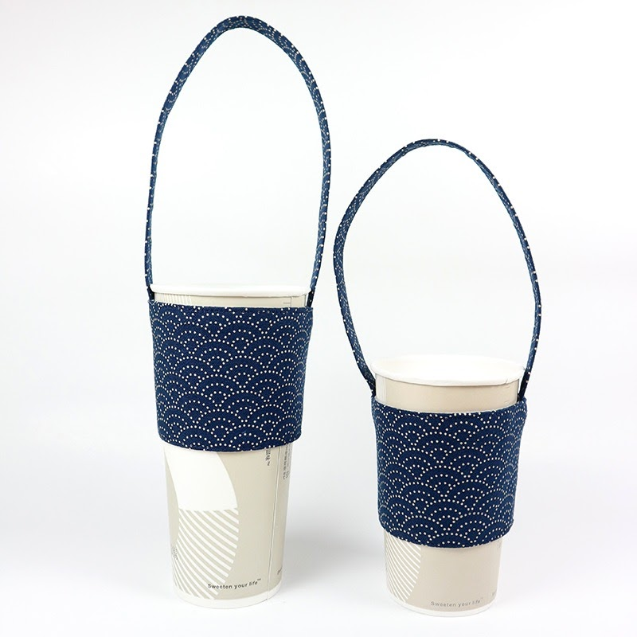

About Paili Food_
關於百利
國外的一位心理學家，他曾經研究過，往往犯罪的人，他們的內心世界都是非常不滿足，而且是非常嚮往完美的。
正是還為這種不滿足和極致的追求完美，所以適得其反，走上了一條不歸路。
每個人都在爭取一個完美的人生，然而這個世界上並沒有絕對完美的事物，日有陰晴、月有盈虧，所以有缺憾才是恆久。
不完美的人生才叫人生，肯低頭就永遠不會撞門，肯讓步就永遠不會退步，求缺的人才有滿足感，惜福的人才有幸福感。
錢的背後就是「事」，把事做好，事成則錢自來。
事的背後就是「人」，把人做好，事自成，事成錢自來。
人的背後就是「命」，把生命的維度修好，自有好運。
命的背後就是「道」，有一顆利他的心即是正道。
生活就如同在一個競爭場裡面，形形色色的人，形形色色的事，我們需要做到的就是不要太貪心、不要太不知足。
如果貪念一起，如果不知足心一起，如果慾望的心一起，就很可能將我們引導著往錯誤的方向走去。
所以約束自己的內心，克制自己的慾望，人生才不會走偏。
